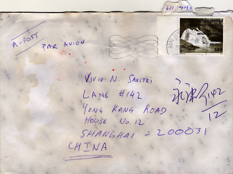
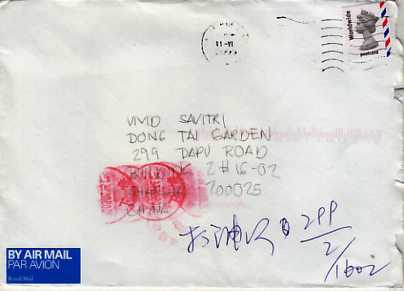

Sun, 15 Aug 2010 19:15:00 · email · letters · writing · shanghai · Los Angeles · friendship
The Forgotten Art of Letter Writing
When was the last time you flex your fingers, practicing that rusty penmanship of yours and write a proper letter? Yes, a letter written with pen on paper.
To those growing up using email or Facebook since elementary school, the mere notion of writing a message using pen and paper instead of typing it away on keyboard would indeed sounds like an odd thing to do.
I’m sure this doesn’t come as a surprise to most of us. Personally, I do most of my communication using the e-method, but even that, I found myself lacking behind and unable to keep up with the stream of messages inundated my inbox. Apparently procrastination doesn’t discriminate.
The e-method, for lack of better word, is quick and easy, in most cases, get the job done. Unfortunately, some people are taking this to the extreme and trying to achieve everything via these quick and dirty e-communication methods. I find this rather sad since the ‘personal touch’ of a real snail mail letter in certain situations just can’t be replaced by what some people refer to as 'c-messaging’, the “c” stands for 'convenience’.

I remember the days when I used to write letters to my late grandfather, in which I’m sure he must’ve suffered reading through my poor penmanship, we both enjoyed the rather old school past time. Reading my grandfather’s elegant penmanship written eloquently and unrivaled to any email I’ve ever received, was indeed a pleasurable memory.
To me, such letters speak volumes about their senders. They obviously care enough to spent the time to compose a few heartfelt sentences by hand and sign the the letter with their own signature. Thus, the art of letter writing has become a luxury, both in time and effort. However, I do understand that sometimes, in the interest of efficiency, we simply had to make do with the Royal G-Mail instead.

Back to my original question, when was the last time you wrote a letter to someone? Food for thought.